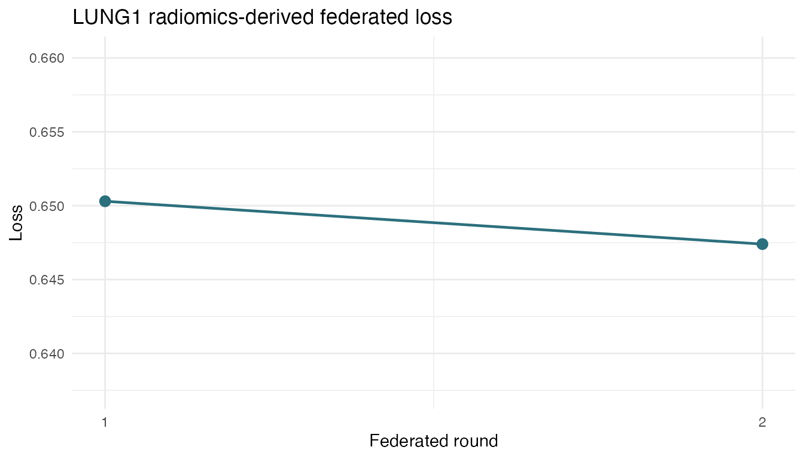

LUNG1 dsImaging Radiomics To dsFlower Evidence
lung1-radiomics-to-flower.RmdHistorical validation artifact (pre-0.3). The recorded results and API snippets below describe the retired client privacy-profile/Secure Aggregation architecture. They do not validate the current v0.3 lifetime-DP contract and must not be used as deployment or security instructions. See
README.mdand the serverARCHITECTURE.mdfor the enforced contract.
This article records the real LUNG1 radiomics handoff run used as
thesis evidence. The rendered article uses the recorded output of the
live May 2026 workflow so that package checks do not require active Opal
servers. The live workflow is implemented in
inst/demos/lung1_radiomics_to_flower.R.
The validation path is:
-
dsImagingresolves the LUNG1 imaging resource and radiomics assets. -
ds.imaging.radiomics.load_features()loads each site’s derived feature table into a server-side DataSHIELD symbol. -
dsFlowerClienttrainssklearn_logregwith FedAvg over the server-side tables. - Only aggregate training history and model parameters are returned.
Running The dsImaging To dsFlower Handoff
The steps below walk through the dsImaging to dsFlower handoff: connect to the nodes, load the server-side radiomic feature tables with dsImaging, and train a federated model with dsFlower. The LUNG1 study is already registered as an imaging resource on three Opal/Rock nodes, each holding its own slice of patients; images, masks and row-level features never leave those nodes. The chunks are shown for reference and are not executed when the article renders; the recorded results of the real run follow.
1. Connect to the DataSHIELD nodes. Open a single session across the three Opal nodes that serve the LUNG1 imaging resource.
library(DSI)
library(DSOpal)
library(dsImagingClient)
library(dsFlowerClient)
builder <- DSI::newDSLoginBuilder()
builder$append(server = "node1", url = "https://opal-node-1.example.org",
user = "researcher", password = "********")
builder$append(server = "node2", url = "https://opal-node-2.example.org",
user = "researcher", password = "********")
builder$append(server = "node3", url = "https://opal-node-3.example.org",
user = "researcher", password = "********")
conns <- DSI::datashield.login(builder$build(), assign = FALSE)
resource <- "dsdemo.lung1_full_study"2. Load radiomic features server-side with
dsImaging. ds.imaging.init() binds the imaging
resource; ds.imaging.radiomics.load_features() then
materialises the derived feature table into the server-side symbol
rad. The dataset_id and asset_id
identify the radiomic asset produced by the dsImaging feature-extraction
step on each node; include_metadata = TRUE adds the
clinical columns and syntactic_names = TRUE makes the
pyradiomics names R-safe. The images and masks never move.
ds.imaging.init(conns, resource, symbol = "img")
ds.imaging.radiomics.load_features(
conns,
dataset_id = "lung1_full_study",
asset_id = "pyradiomics_features",
symbol = "rad",
include_metadata = TRUE,
syntactic_names = TRUE
)3. Train the federated model on the derived
features. Hand the server-side rad table to
ds.flower.fit() with logistic regression and FedAvg. Only
aggregate training history and model parameters come back.
features <- c(
"original_firstorder_Energy",
"original_shape_Compactness1",
"original_glrlm_RunLengthNonUniformity",
"wavelet.HLH_glrlm_RunLengthNonUniformity",
"age",
"gender_male"
)
fit <- ds.flower.fit(
conns,
symbol = "rad",
target = "os_2yr_alive",
features = features,
model = "sklearn_logreg",
model_params = list(max_iter = 100L),
strategy = "fedavg",
privacy = "trusted_internal",
rounds = 2
)
DSI::datashield.logout(conns)Recorded Results
These results are loaded from the committed evidence artifact for run 17493579680844882070; no live Opal servers are contacted when the article renders.
Server-Side Cohort
site_dim_names <- grep("opal", names(evidence$dimensions), value = TRUE)
site_dims <- do.call(rbind, lapply(site_dim_names, function(name) {
dims <- unlist(evidence$dimensions[[name]])
data.frame(
site = sub("dimensions of rad in ", "", name, fixed = TRUE),
rows = dims[[1]],
columns = dims[[2]]
)
}))
combined_dims <- unlist(evidence$dimensions[["dimensions of rad in combined studies"]])
knitr::kable(site_dims)| site | rows | columns |
|---|---|---|
| opal1 | 142 | 20 |
| opal2 | 143 | 20 |
| opal3 | 137 | 20 |
Pooled across the three nodes, the dsdemo.lung1_full_study cohort holds 422 rows and 20 columns, with os_2yr_alive as the federated target.
Features
feature_roles <- c(rep("radiomic", 4), "metadata", "metadata")
feature_table <- data.frame(
feature = unlist(evidence$features),
role = feature_roles,
stringsAsFactors = FALSE
)
knitr::kable(feature_table)| feature | role |
|---|---|
| original_firstorder_Energy | radiomic |
| original_shape_Compactness1 | radiomic |
| original_glrlm_RunLengthNonUniformity | radiomic |
| wavelet.HLH_glrlm_RunLengthNonUniformity | radiomic |
| age | metadata |
| gender_male | metadata |
Federated Training
training <- data.frame(
model = "sklearn_logreg",
strategy = "fedavg",
privacy_profile = evidence$privacy,
rounds = evidence$rounds,
max_iter = evidence$max_iter,
stringsAsFactors = FALSE
)
knitr::kable(training)| model | strategy | privacy_profile | rounds | max_iter |
|---|---|---|---|---|
| sklearn_logreg | fedavg | trusted_internal | 2 | 100 |
history <- do.call(rbind, lapply(evidence$history, function(x) {
data.frame(
round = x$round,
loss = x$loss,
n_clients = x$n_clients,
n_failures = x$n_failures
)
}))
final_loss <- round(tail(history$loss, 1L), 4)
total_failures <- sum(as.integer(history$n_failures))
run_status <- if (evidence$status == 0 && total_failures == 0) "passed" else "failed"
knitr::kable(history, digits = 4)| round | loss | n_clients | n_failures |
|---|---|---|---|
| 1 | 0.6503 | 3 | 0 |
| 2 | 0.6474 | 3 | 0 |
The run finished with a final federated loss of 0.6474 and 0 total client failures across 2 round(s); the acceptance check passed.
if (requireNamespace("ggplot2", quietly = TRUE)) {
ggplot2::ggplot(history, ggplot2::aes(x = round, y = loss)) +
ggplot2::geom_line(color = "#2C6F7D", linewidth = 0.8) +
ggplot2::geom_point(color = "#2C6F7D", size = 2.8) +
ggplot2::scale_x_continuous(breaks = history$round) +
ggplot2::coord_cartesian(ylim = c(min(history$loss) - 0.01,
max(history$loss) + 0.01)) +
ggplot2::labs(x = "Federated round", y = "Loss",
title = "LUNG1 radiomics-derived federated loss") +
ggplot2::theme_minimal(base_size = 11)
} else {
plot(history$round, history$loss, type = "b",
xlab = "Federated round", ylab = "Loss",
main = "LUNG1 radiomics-derived federated loss")
}
Evidence Scope
Validated claim. End-to-end functional validation that dsFlower can train on dsImaging-derived radiomic feature tables without moving images, masks or row-level feature data to the researcher.
Explicit non-claim. This two-round logistic-regression run is not a clinical performance claim.
Global model shape. 1 x 6 coefficients plus intercept.